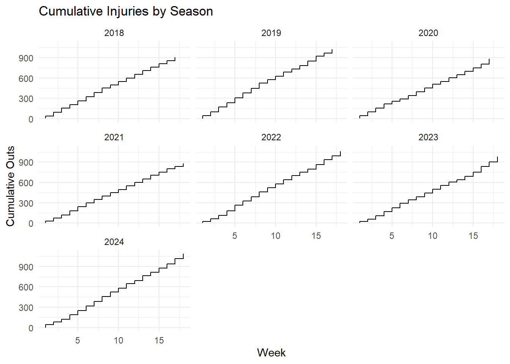
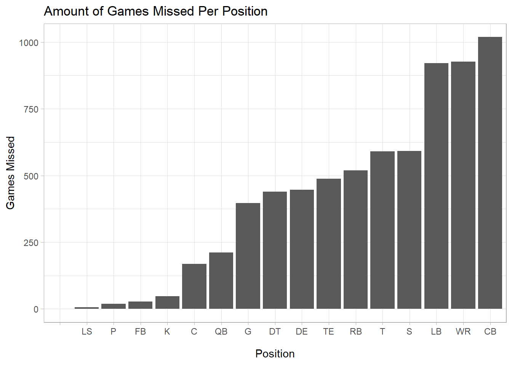
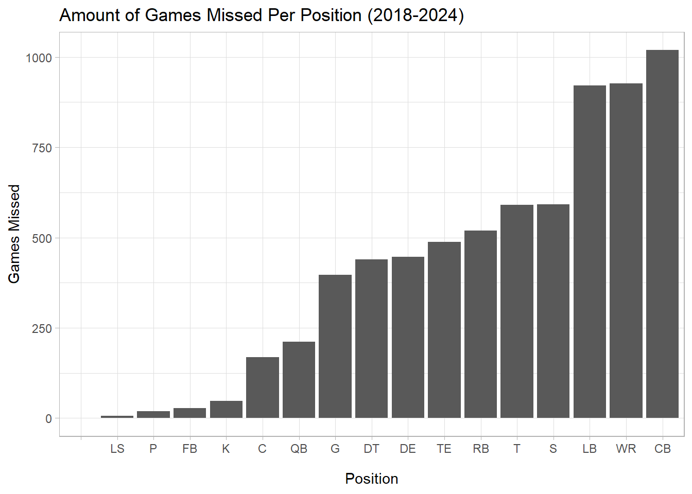

Code
library(tidyverse)
library(nflreadr)library(tidyverse)
library(nflreadr)The NFL has a problem, and it’s getting harder to ignore. Every Sunday, fans watch as star players limp off the field, backup quarterbacks take the helm, and fantasy football lineups crumble. Over the past few seasons, it feels like injuries have become more frequent and more devastating.
But is this just recency bias, or are injuries actually trending upward?
Let’s look at the numbers.
Using injury report data from the past seven seasons (2018-2024), we can track exactly how many games players have missed due to injury during the regular season. The results paint a concerning picture for the league and suggest that the problem isn’t going away anytime soon.
injuries <- load_injuries(
seasons = 2018:2024,
file_type = getOption("nflreadr.prefer", default = "rds")
) |>
filter(game_type == "REG")
out <- injuries |>
group_by(season, week, position) |>
summarize(Out = sum(report_status == "Out", na.rm = TRUE), .groups = 'drop') |>
group_by(season) |>
arrange(week) |>
mutate(cumulative_out = cumsum(Out))
ggplot() +
geom_step(data=out, aes(x=week, y=cumulative_out)) +
facet_wrap(~season) +
labs(
title = "Cumulative Injuries by Season",
x = "Week",
y = "Cumulative Outs"
) +
theme_minimal()
Week by week, season by season, the numbers climb relentlessly. What’s striking isn’t just that injuries happe, it’s how consistently they accumulate throughout every season. By Week 5, teams are already dealing with dozens of missed games. By Week 10, that number has typically doubled. And by the time playoff rosters are set, most seasons have seen well over 1,000 total missed games lost to injury.
The pattern is remarkably consistent across all seven seasons. There’s no “fluky” year where injuries suddenly spiked or mysteriously disappeared. Instead, we see the same grinding accumulation year after year, suggesting that high injury rates are baked into the modern NFL.
The 2020 season, played during COVID-19 with altered off season programs, actually doesn’t look dramatically different from other years, which is surprising. Many expected the shortened training camp and lack of preseason games to lead to more injuries, but the data doesn’t bear that out.
But the real question is: are things getting worse over time?
team_injuries_full <- injuries |>
filter(game_type == "REG") |>
mutate(team = case_when(
team == "OAK" ~ "LV",
team == "SD" ~ "LAC",
TRUE ~ team
)) |>
group_by(season, team) |>
summarize(total_outs = sum(report_status == "Out", na.rm = TRUE), .groups = 'drop')
avg_injuries <- team_injuries_full |>
group_by(season) |>
summarize(avg_outs = mean(total_outs))
ggplot() +
geom_line(data=team_injuries_full, aes(x=season, y=total_outs, group=team),
color="gray80", alpha=0.5, size=0.8) +
geom_line(data=avg_injuries, aes(x=season, y=avg_outs),
size=1.5, color="darkred") +
geom_point(data=avg_injuries, aes(x=season, y=avg_outs),
size=3, color="darkred") +
geom_text(data=avg_injuries, aes(x=season, y=avg_outs, label=round(avg_outs, 1)),
vjust=-1, size=4) +
labs(
title = "Average Missed Games Due To Injury Per Season",
subtitle = "Individual teams in gray, league average in red",
x = "Season",
y = "Missed Games"
) +
theme_light()Warning: Using `size` aesthetic for lines was deprecated in ggplot2 3.4.0.
ℹ Please use `linewidth` instead.
The answer is a qualified yes. Looking at the league-wide average, we can see that teams are losing more players to injury now than they were six years ago. In 2018, the average team saw 28.3 missed games due to injury. By 2024, that number had climbed to 33.6.
That might not sound dramatic, just over five additional games per team. But consider what it means at scale. Every team in the league is dealing with roughly five more missed games by players compared to 2018. Multiply that across 32 teams and 18 weeks, and you’re looking at hundreds of additional missed games league-wide. That’s entire rosters’ worth of players sitting out.
The peak came last season, further backing this claim, when teams averaged 34.1 missed games reaching nearly six more games than in 2018. While the climb has been gradual and slow, we are still seeing that increase.
The individual team lines (grey) tell an even more volatile story. Some franchises have seen injury counts spike dramatically in certain years, with some teams losing 50+ games to injury in a single season. Other teams have managed to stay relatively healthy, sometimes dipping below 20 missed games.
So, what’s the deal?
injury_types_out <- injuries |>
filter(game_type == "REG") |>
filter(report_status == "Out") |>
filter(!is.na(report_primary_injury)) |>
count(report_primary_injury) |>
arrange(desc(n)) |>
slice_head(n = 15) # Top 15 only
ggplot(injury_types_out, aes(x=reorder(report_primary_injury, n), y=n)) +
geom_col(fill="darkred") +
coord_flip() +
labs(
title = "Most Common Injuries Leading to Missed Games (2018-2024)",
x = "Injury Type",
y = "Games Missed"
) +
theme_light()
Knee injuries dominate the injury report, accounting for more missed games than any other single injury type by a significant margin. This isn’t surprising considering knees bear enormous stress during cutting, jumping, and absorbing contact. ACL, MCL, and meniscus tears can end seasons in an instant.
Ankles come in second, a joint that takes punishment on every play. Ankle sprains range from minor nuisances to severe high-ankle injuries that can sideline players for weeks to months.
Hamstrings com in third, reflecting the explosive speed and acceleration modern NFL players generate. These injuries often linger and recur, keeping players sidelined for weeks even when they’re not season-ending.
Concussions, while lower on the list by raw numbers, represent one of the most serious concerns for player safety. The league has made concussion protocol a priority, but head injuries remain an unavoidable reality in a collision sport.
Foot, shoulder, hip, and calf injuries round out the top causes. These aren’t freak accidents, but they’re the result of the physical toll the game takes on players’ bodies week after week. The human body simply wasn’t designed to absorb the forces generated when 300-pound linemen collide at full speed, or when defensive backs try to tackle running backs moving at 20 mph.
Notably, many of these injuries like hamstrings, calves, backs—are soft tissue injuries that can sometimes be linked to training, conditioning, and workload management. This suggests there may be room for teams to improve their injury prevention programs, though the data shows that even the best-run organizations can’t escape injury problems entirely.
These injuries are resulting from how fast the NFL has gotten.
pos <- injuries |>
group_by(position) |>
summarize(Out = sum(report_status == "Out", na.rm = TRUE))
ggplot() +
geom_bar(data = pos, aes(x = reorder(position, Out), weight = Out))+
labs(
title = "Amount of Games Missed Per Position (2018-2024)",
x = "Position",
y = "Games Missed"
) +
theme_light()
Corner back, wide receiver, and line backer are the top three most injured position by a long shot. It’s no coincidence that the fastest playing players and the ones who tend to take the blunt of each and every hit are the ones falling to these lower body and head injuries.
While the NFL has created rules and invented new technologies to prevent injuries and keep players in the game, it seems they are being out paced by how sped up the league is getting.